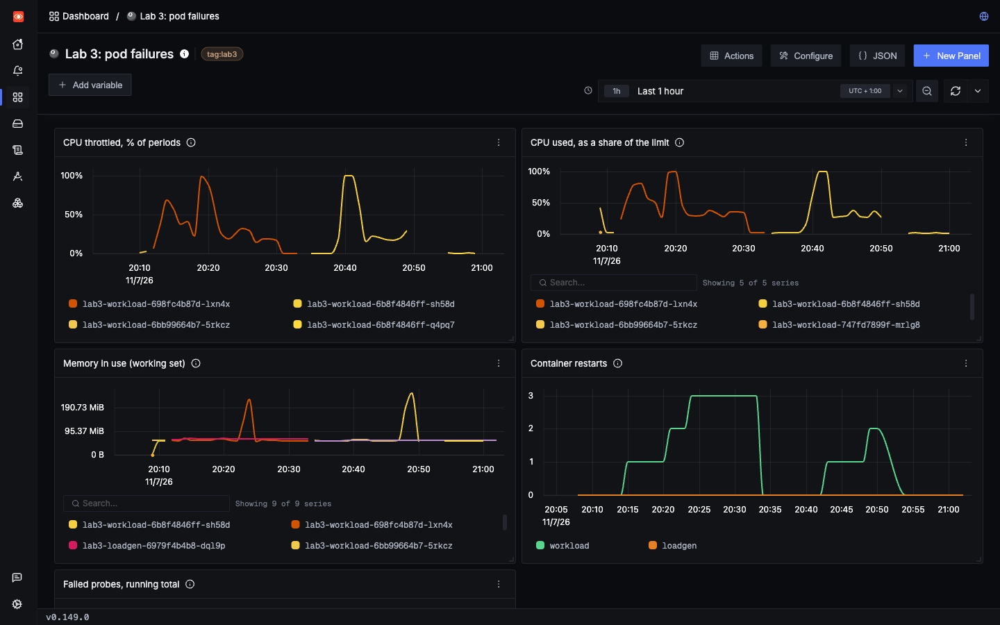

Lab 3: incident 1 of 5
Slow, then restarted
A CPU limit quietly slows a pod down. Under a little more load, the same limit gets a healthy pod killed by its own health check. The metric that explains it isn't collected by default.
1Trigger it
Start the load at 2 requests/s, then burn CPU for two minutes. throttle starts two busy processes inside the container, so they compete for its CPU limit. They're separate processes, so any slowdown you see comes from throttling and not from Python's interpreter lock.
Then try it again at 5 requests/s. The result is very different, so wait for the first burn to end.
2Symptom
The same code, the same limit and the same burn gave two different outcomes. These are spans for GET /api/work:
| Load | P50 before | P50 during | Slowest request | What happened |
|---|---|---|---|---|
| 2 requests/s | About 45 ms | About 330 ms | 1 s | Slow, and it survived. No restart |
| 5 requests/s | About 40 ms | 12.2 s | 18.8 s | Restarted after 24 seconds |
There was no error and no crash. The restart at 5 requests/s looks like a separate problem, but it's the same one.
3Where to look
- Open the Lab 3: pod failures dashboard, which
make lab3created. - Compare CPU throttled with CPU used, as a share of the limit.
- For the restart, search the logs for the Kubernetes event. Note the
attribute.prefix, which the search needs here:
attribute.k8s.namespace.name = 'lab3' AND body CONTAINS 'liveness'Why the prefix? On a Kubernetes event, k8s.namespace.name is a log attribute. On your app's logs it's a resource attribute. Without attribute., this search matches nothing and gives no error.
4Evidence
Throttling, as a share of 100 ms CPU periods, worked out from container_cpu_cfs_throttled_periods_total and container_cpu_cfs_periods_total:
| Moment, at 2 requests/s | Periods throttled |
|---|---|
| Burning CPU | 89 to 99.7% |
| Just serving requests | 19 to 32% |
Look at that second row again. At the same moment, k8s.container.cpu_limit_utilization read about 0.23, so the pod seemed to be using under a quarter of its limit. Both are true:
- A 200m limit means 20 ms of CPU in each 100 ms period.
- One request needs about 20 ms of CPU, plus the agent's own work.
- So one request can use up a whole period's quota, and the container waits for the next one.
Averaged over 30 seconds that looks idle. This is why average CPU can't tell you about throttling. You need the throttling metric, and it isn't collected by default.
The restart left this trail in the Kubernetes events, which SigNoz stores as logs:
Liveness probe failed: Get "http://10.42.0.103:8000/healthz": context deadline exceeded
Container workload failed liveness probe, will be restarted
5Root cause
Two settings interact:
labs/lab3-kubernetes/k8s/app.yaml lines 42–4342 # CPU above this limit is throttled. Memory above it is an OOM kill.
43 limits: { cpu: 200m, memory: 256Mi }labs/lab3-kubernetes/k8s/app.yaml lines 47–4847 # Three failures 5 seconds apart, and the kubelet restarts the container.
48 livenessProbe: { httpGet: { path: /healthz, port: 8000 }, periodSeconds: 5, timeoutSeconds: 3, failureThreshold: 3 }At 2 requests/s, the CPU left over was enough to keep up. At 5 requests/s, requests arrived faster than they could finish, so a queue built up. /healthz waited in that queue past its 3-second timeout. Three failures later, the kubelet restarted a container with nothing wrong with it.
The restart looked like a fix here, but only because the burn died with the container. If the CPU demand were real traffic, the new container would be throttled too, and would be killed again.
The exit reason doesn't help. Kubernetes reported this as Completed, because the app shut down cleanly when it was told to. The reason is in the events, not in the exit status.
6Resolution
- Give it more CPU. Raise the limit, or remove it and rely on the request. Teams disagree about CPU limits, so measure throttling before you decide.
- Size limits for bursts, not averages. Here, a limit that barely fits one request throttles every request.
- Make liveness cheap and forgiving. A liveness probe should only fail if a restart would help. Killing a busy pod removes capacity when you need it most.
To try this here: raise cpu: 200m on the limits line in labs/lab3-kubernetes/k8s/app.yaml, and save it. Then deploy it. What this command does.
make lab3Check the pod got it, then put the original back, because the other pages need the low limit:
kubectl -n lab3 get pod -l app=workload -o jsonpath='{.items[0].spec.containers[0].resources.limits}'
git restore labs/lab3-kubernetes/k8s/app.yaml
make lab3In Lab 4 you turn this into an alert. This pod's normal throttling is 19 to 32%, so a 25% threshold would never stop firing. It uses 50%.
Check yourself: CPU reads 0.23 of the limit, and 25% of periods are throttled. How can both be true?
Check yourself: Why did the load decide whether the pod got restarted?